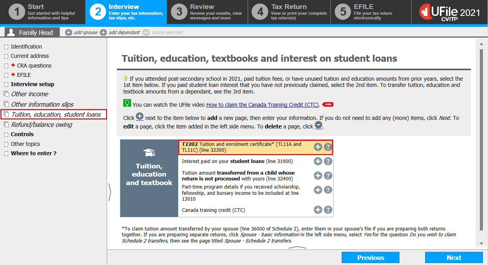
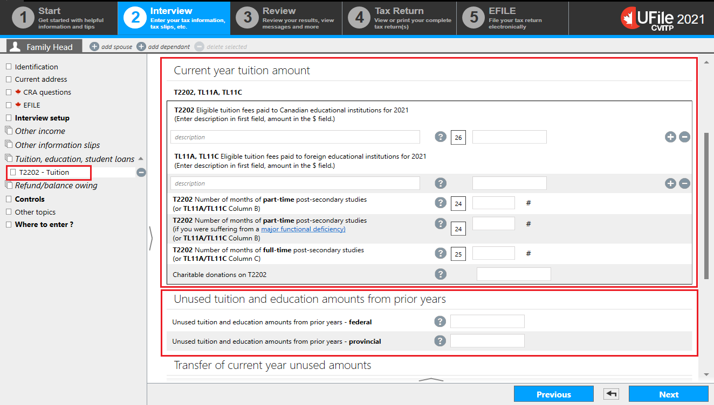
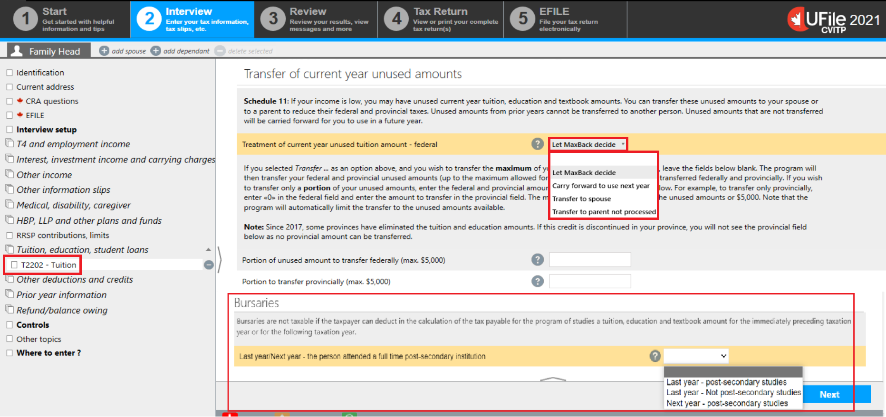
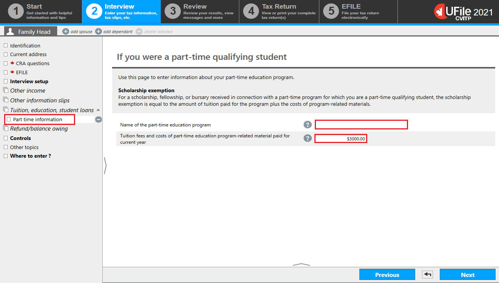
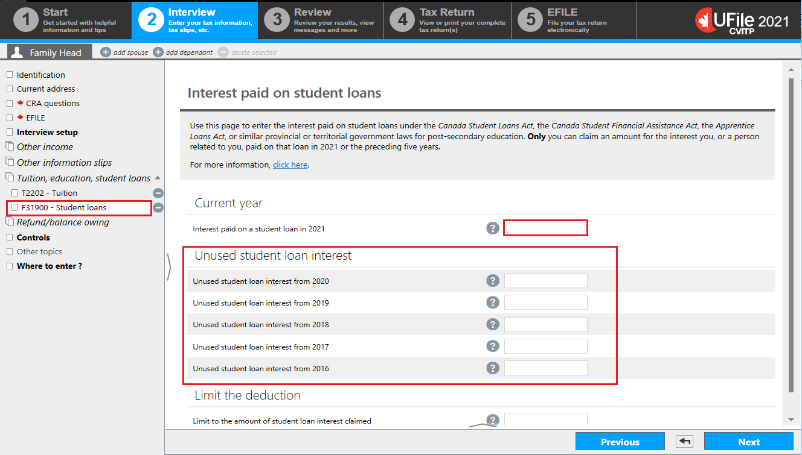
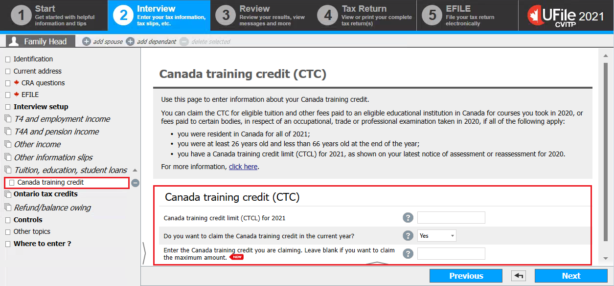

Interview setup

Text version of this screenshot
UFile screen
Under Interview tab
Family Head sub-tab
Interview setup topic is highlighted
Tuition, education, textbooks, student loans and Canada training credit is checked and highlighted
- Click Interview setup in the left-side menu
- tick the box next to Tuition, education, textbooks, student loans, and Canada training credit in the Student section
- click Next
Tuition, education, textbooks, student loans
Text version of this screenshot
UFile screen
Under Interview tab
Family Head sub-tab
Tuition, education, student loans topic is highlighted
Tuition, education, textbooks and interest on student loans page
T2202 Tuition and enrolment certificate* (TL11A and TL11C) (line 32300) is highlighted
- click Tuition, education, student loans in the left-side menu
Tuition
Text version of this screenshot
UFile screen
Under Interview tab
Family Head sub-tab
T2202 - Tuition topic is highlighted
Current year tuition amount section is highlighted
Unused tuition and education amounts from prior years section is highlighted
Tuition - Transfer of current year unused amounts, Bursaries
Text version of this screenshot
UFile screen
Under Interview tab
Family Head sub-tab
T2202 - Tuition topic is highlighted
Bursaries
Last year/Next year – the person attended a full time post-secondary institution is highlighted with the following drop-down options:
Last year – post-secondary studies
Last year – Not post-secondary studies
Next year – post-secondary studies
Instructions for transfer of current year unused tuition amounts:
- select one of the following from the Treatment of current year unused tuition amount – federal drop-down menu:
- Let MaxBack decide
- Carry forward to use next year
- Transfer to spouse
- Transfer to parent not processed
Ufile tip
If the individual does not specify how they wish to use their unused tuition amounts, choose Let MaxBack decide.
Let MaxBack decide provides the best overall calculation for all family members, when applicable. However, this could result in the student keeping all their own amounts, with no tuition being transferred.
Note
If the individual chooses the Transfer to spouse option, you need to also prepare and submit the spouse’s tax return. However, if the individual chooses the Transfer to parent not processed option, there is no requirement to prepare the parent or grandparent’s tax return.
- enter the amount the student wants to transfer and leave blank if they want to transfer the maximum amount of $5,000
Scholarship and bursary income - Part-time student
Text version of this screenshot
UFile screen
Under Interview tab
Family Head sub-tab
Part time information topic is highlighted
If you were a part-time qualifying student page
Name of the part-time education program – empty field is highlighted
Tuition fees and costs of part-time education program-related material paid for current year is highlighted with $3,000.00 entered into field
- click Part time information in the left-side menu
- enter the Name of the part-time education program
- enter the Tuition fees and costs of part-time education program-related material paid for current year
- click Next
Claiming interest paid on student loans
Text version of this screenshot
UFile screen
Under Interview tab
Family Head sub-tab
F31900 – Student loans topic is highlighted
Interest paid on a student loan in 2021 is highlighted
Unused student loan interest section is highlighted
- only enter the interest for the current tax year into the field under the Current year heading
- enter the amounts from the 5 preceding years, that have not already been claimed, into the applicable fields under the Unused student loan interest heading
The software may reduce the claim for interest paid on student loans since the amount entered may not be needed in its entirety to minimize the taxes. It is important to let the student know the unused amount that may be carried forward.
- click Next
Tuition, education and textbook amounts from a child

Text version of this screenshot
UFile screen
Under Interview tab
Family Head sub-tab
F32400 – Tuition from child topic
Tuition, education and textbook amounts from a child page
- enter the amount the child is transferring to the individual into the Amount being transferred federally field
- enter the information regarding the child into the applicable fields
- click Next
Claiming the Canada training credit (CTC)
Text version of this screenshot
UFile screen
Under Interview tab
Family Head sub-tab
Canada training credit topic is highlighted
Canada training credit (CTC) page
Canada training credit (CTC) section is highlighted
Canada training credit limit (CTCL) for 2021
Do you want to claim the Canada training credit in the current year?
Yes is selected
Enter the Canada training credit you are claiming. Leave blank if you want to claim the maximum amount
- enter the individual’s Canada training credit limit (CTCL) for 2022
- select Yes from the Do you want to claim the Canada training credit in the current year? drop-down menu. Once you select Yes, the tax software generates an additional field
- if applicable, enter an amount in the Enter the Canada training credit you are claiming. Leave blank if you want to claim the maximum amount field
- click Next